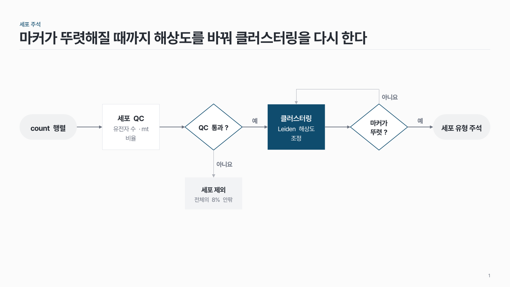
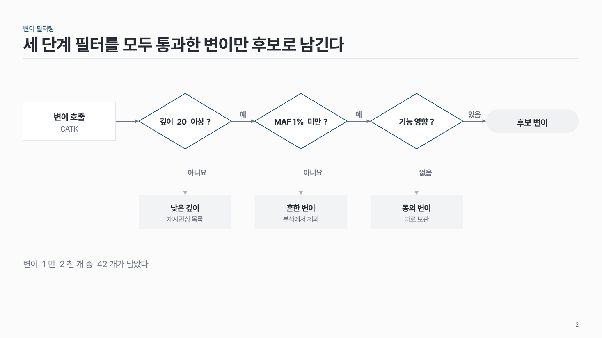
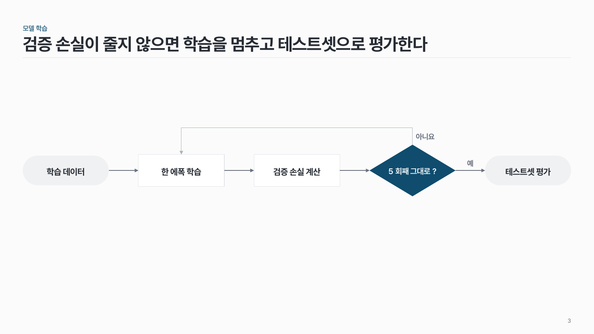

순서도 flow-08
알고리즘 · 처리 순서를 가로 한 줄로. 판단은 마름모, '예'는 오른쪽으로 이어지고 '아니요'는 아래 결과 칸이나 앞 단계로 돌아가요.

이 시안
판단 2개 · 아래 결과 칸 하나 · 되돌아가는 선 하나 · 핵심 단계 강조
슬라이드 제목: 마커가 뚜렷해질 때까지 해상도를 바꿔 클러스터링을 다시 한다
항목 수
언제 쓰나
처리 중간에 판단이 1–3번 들어가는 알고리즘을 한 장으로 보여 줄 때요. QC 통과 여부로 거르고, 결과가 나아질 때까지 같은 단계를 되풀이하는 분석 · 학습 과정에 맞아요.
구성
- 왼쪽부터 노드 4–7개: 시작 · 끝은 알약, 단계는 흰 칸, 판단은 마름모. 노드는 같은 폭으로 간격도 하나.
- 판단의 '예' 쪽은 줄을 따라 오른쪽으로 이어져요.
- '아니요' 쪽은 둘 중 하나: 마름모 바로 아래 결과 칸(제외 · 재요청 같은 곁길), 또는 줄 위로 돌아 앞 단계로 되돌아가는 선(반복).
- 선 옆에 '예 · 아니요' 같은 짧은 라벨.
- 핵심 노드 하나만 진한 색.
지킬 것
- 판단은 1–3개, 마름모 글은 12자 이내 질문 ("수렴했나?").
- 되돌아가는 선은 한 장에 하나.
- 줄 화살표는 중간 회색, 아니요 쪽 선은 더 옅게. 굵기는 글자 굵기 정도.
하지 말 것
- 결과 칸 끝에 판단을 또 붙여 아래로 나무를 키우지 않아요. 그러면 장을 나눠요.
- 되돌아가는 선을 여러 개 그려 선끼리 겹치게 하지 않아요.
- 노드마다 다른 색을 칠하지 않아요.
시안 비교
같은 내용을 옵션만 바꿔 그렸어요. 그림을 누르면 크게 보여요.
A판단 2개 · 아래 결과 칸 하나 · 되돌아가는 선 하나 · 핵심 단계 강조
슬라이드 제목: 마커가 뚜렷해질 때까지 해상도를 바꿔 클러스터링을 다시 한다

B판단 3개 연속 · 모두 아래 결과 칸 · 강조 없음 · 결론 줄
슬라이드 제목: 세 단계 필터를 모두 통과한 변이만 후보로 남긴다

C판단 1개 + 되돌아가는 선 · 시작 · 끝 알약 · 판단 강조
슬라이드 제목: 검증 손실이 줄지 않으면 학습을 멈추고 테스트셋으로 평가한다